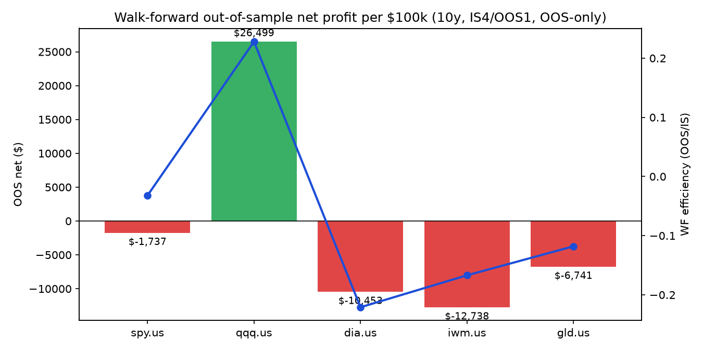
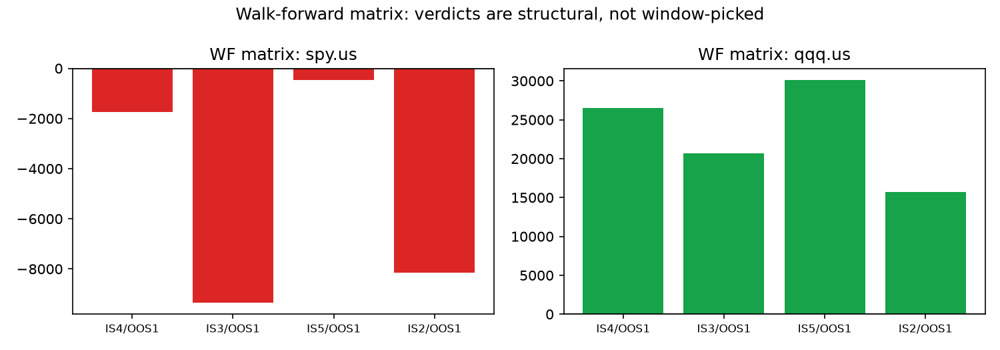
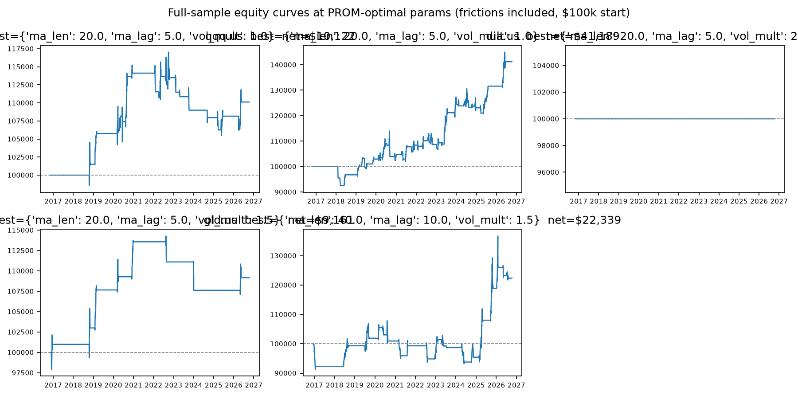
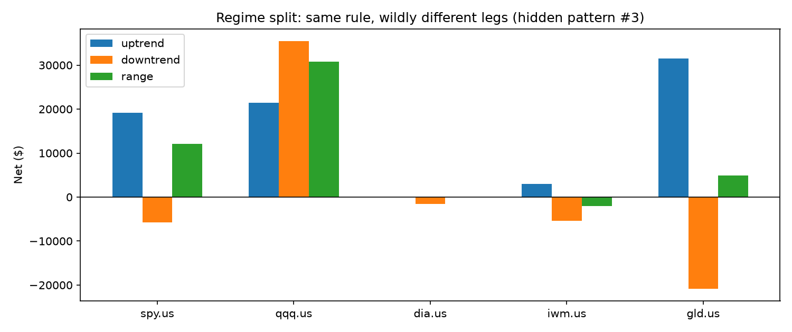

The famous trading-system rulebook, tested literally on 10 years of real prices. 1 market survives out of 5.
Yahoo Finance daily bars · 2016-10-10 → 2026-10-09 · 12,570 bars · frictions overstated on purpose · regenerated by docker compose up lab
1️⃣ We coded Pardo's exact recipe (buy when the average price beats its 10-days-ago self by twice the daily wiggle). 2️⃣ We graded it like strict teachers: 7 unseen exam years, double trading costs, 30-trade minimum. 3️⃣ QQQ passes every exam; SPY, DIA, IWM, GLD fail — each in a different, instructive way. 4️⃣ Everything re-runs with one command. 5️⃣ This is a measuring instrument, not financial advice.
| Market | OOS net | WF eff. | Verdict |
|---|---|---|---|
| QQQ | +$26,499 | 0.23 | ROBUST 4/4 |
| SPY | −$1,737 | −0.03 | FAIL 0/4 |
| DIA | −$10,453 | −0.22 | FAIL (best = sit out) |
| IWM | −$12,738 | −0.17 | FAIL (tail n=1) |
| GLD | −$6,741 | −0.12 | FAIL (lopsided) |




docker compose up lab cat results/cross_market_patterns.csv docker compose --profile test run tests python3 -m http.server 8000 --directory docs # open http://localhost:8000/preview.html
GitHub Pages: Settings → Pages → Deploy from a branch → main + /docs → Save, then open /preview.html. Full guide in the README.
Pick one answer per question. Explanations appear instantly. Score ≥ 7/8: you read backtests better than most candidates.